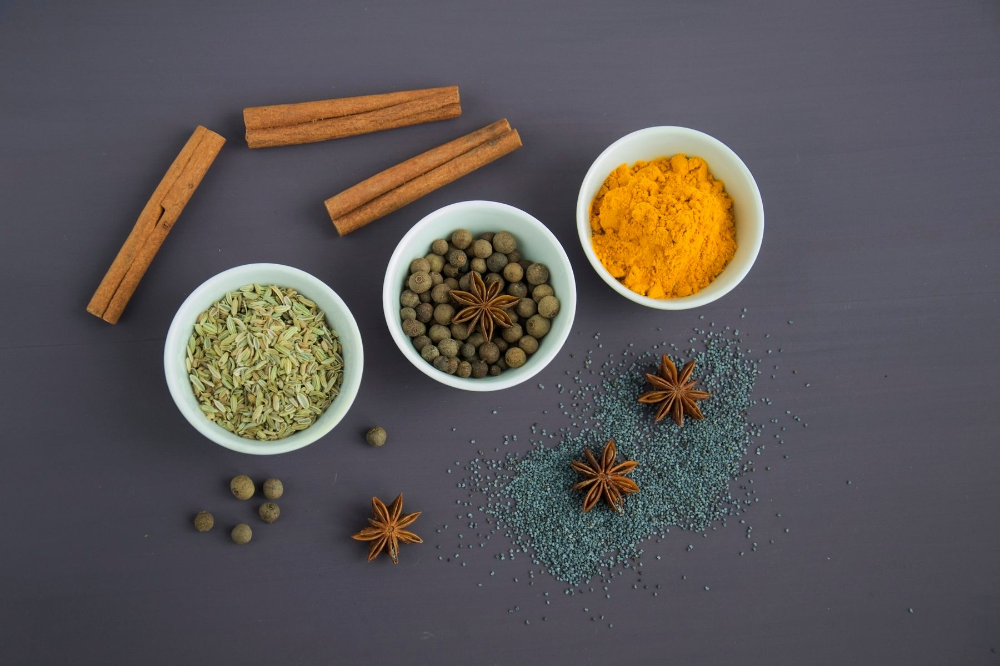

Earthy · Golden
Turmeric
A warm, earthy note and a brilliant golden colour. Start with a little in lentils, rice or a vegetable curry; cook gently with the other ingredients.
Ask about turmeric ↗Kenyan roots. Natural character.
From the comfort of a familiar recipe to the joy of something new. Make room for flavour, with a Kenyan brand at the heart of your kitchen.

THE BEAUTY IS IN THE INGREDIENTS.A WORLDOur story
Food connects us to places, people and possibility. Asili Spices is a Kenyan brand founded by Ann Kaaria, a researcher and scientist.
At the centre of the brand is a simple invitation: pay attention to the ingredients that bring a meal to life. The warmth of spice in a shared pot. The aroma that turns cooking into an occasion. The small discoveries that make a familiar dish your own.
Our guiding words — Pure. Natural. Authentic. — express the spirit of Asili. Ask about ingredients, preparation and the products available today, so you can choose what suits your kitchen.
The spice cabinet
Explore the personalities behind familiar spices. These ingredient guides are inspiration, not a live catalogue. Confirm products, pack sizes and availability directly with Asili Spices.
Earthy · Golden
A warm, earthy note and a brilliant golden colour. Start with a little in lentils, rice or a vegetable curry; cook gently with the other ingredients.
Ask about turmeric ↗Bold · Aromatic
Woody warmth for everyday cooking. Add during cooking for a rounded flavour, or finish with freshly crushed pepper for a brighter aroma.
Ask about black pepper ↗Lively · Warming
A little can change the whole conversation. Stir gradually into sauces, beans and marinades. Taste as you go: heat varies by variety and preparation.
Ask about chilli ↗Nutty · Savoury
An earthy foundation for beans, lentils and roasted vegetables. Gently warm whole seeds in a dry pan until fragrant, keeping them moving to avoid burning.
Ask about cumin ↗Warm · Comforting
Familiar in baking and intriguing in savoury food. Infuse a stick into tea or a slow-cooked stew, or add a small pinch of ground cinnamon to porridge.
Ask about cinnamon ↗Fragrant · Lifting
A fragrant lift for chai, rice and desserts. Gently crack whole pods before infusing, then remove them before serving when appropriate.
Ask about cardamom ↗No matching guides. Try another spice or choose all flavours.
SMALL CHANGES, BIG CHARACTER
For beans or lentils, gently cook onion, then add a small pinch of cumin and turmeric before adding tomatoes and liquid. Stir and keep the heat gentle so the spices do not scorch.
Infuse a cinnamon stick and lightly cracked cardamom pods in simmering water before adding tea and your preferred milk. Strain, taste and adjust to your preference.
Toss chopped vegetables with oil, black pepper and a little chilli before roasting. Season gradually and adjust the heat at the table, especially when cooking for others.
Store spices tightly closed in a cool, dry cupboard, away from the hob and direct sunlight. Use a clean, dry spoon and follow the label for storage and date information.

Meet the founder
Ann Kaaria
Founder · Kenyan researcher & scientist
Asili Spices puts a person behind the name. Founded by Ann Kaaria, the brand brings a Kenyan perspective to a conversation that belongs to every kitchen: how do we make everyday food more interesting?
Whether you are discovering spices for home cooking or exploring a business enquiry, start with a conversation. Ask about the current range, discuss your needs and get the details before placing an order.
Retail & trade
Running a restaurant, stocking a shop or planning a catering menu? Tell us what you need. Discuss current availability, pack options and quantities before any commitment. For enquiries outside Kenya, ask about delivery feasibility, costs and applicable arrangements.
Frequently asked
Enquiries are welcome from anywhere. Delivery destinations, costs, lead times and any import requirements must be discussed and confirmed before an order is accepted.
Ask for the specific product’s ingredient and allergen information before purchasing. Do not assume a spice or blend is free from a particular allergen or suitable for your dietary needs.
Call or WhatsApp Asili Spices on +254 722 658559. We can confirm current products, pack sizes, availability and ordering details.
Trade enquiries are welcome from retailers, restaurants, caterers, hospitality businesses, institutions and resellers. Availability and terms can be discussed directly.
The range may evolve over time. WhatsApp us for the most current catalogue rather than relying on an old product list.
Keep spices tightly sealed, dry and away from direct sunlight or strong heat. Use clean, dry utensils when scooping to help preserve aroma and quality.
Yes. The website highlights representative categories, not a fixed inventory. Contact us with the exact spice or blend you need.
Get in touch
For orders, current stock, pack sizes, product questions, trade enquiries and partnerships, contact Asili Spices directly.